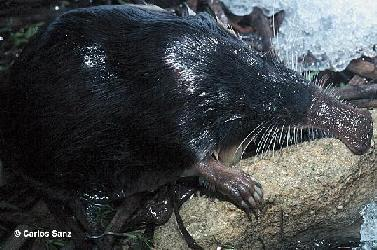

|
| Desmán
ibérico |
Galemys
pyrenaicus |
| Orden:
Insectivora, familia: talpidae |
 Identificación
Identificación |
Animal
inconfundible, dado que no se parece a ninguna
otra especie de la fauna ibérica. Su trompa,
aplastada y desnuda, destaca de un cuerpo rechoncho,
con una gruesa cola escamosa, de sección
redondeada, pero comprimida lateralmente en su
extremo. |
 |
|
Descripción |
Trompa
bastante larga, muy aplastada con las narices
abiertas transversalemente en la cara dorsal de
su extremo, desnuda, pero franjeada en los lados
por abundantes y largas vibrisas. Ojos pequeños,
prácticamente invisibles bajo el pelo.
Cuerpo rechoncho, que en estado de reposo parece
redondeado, mientras que cuando nada se alarga
considerablemente. Extremidades anteriores pequeñas
con membrana interdigital corta. Pies posteriores
grandes, largos, encorvados hacia dentro con amplia
membrana interdigital, cubiertos de piel escamosa
y con una franja de pelos largo, fuertes y compactos. |
Cola
muy larga, cilíndrica, comprimida lateralmente
hacia la punta y revestida de pelo duro, bastante
escaso para dejar entrever la piel escamosa. Bajo
la base de la cola se abre una glándula
que segrega un humor almizclado. Mamas 1.1-3.3.
Color pardo oscuro, variando del sepia al pardo
claro, con brillantes reflejos metálicos
plateados o bronceados, que se acentúan
cuando el animal está sumergido en el agua.
La trompa y las extremidades tienen la piel negruzco,
mientras los pelos que hay en estas partes son
plateados o de un color de ante muy lustroso.
Región ventral mucho más pálida
que la dorsal, de un gris reluciente cuyo matiz
varía mucho, según los ejemplares.
Cola de color carne lívido con los pelos
blancuzcos o amarillentos. |
|
| Dimorfismo
sexual |
| El
desmán no presenta un evidente dimorfismo
sexual, como es la regla general entre los tálpidos.
Resulta difícil sexar los animales en vivo,
dado que ambos sexos tienen un órgano peniforme,
los machos tienen los testículos intraabdominales
y las hembras tienen la vagina abierta durante un
breve período de tiempo. |
| Descripción
juvenil |
Para
distinguir los espécimenes juveniles de
los adultos, el peso solo nos sirve hasta el cuarto
mes, en el que alcanzan un peso similar al de
los adultos. Por eso los investigadores han establecido
el criterio del desgaste dental para determinar
las edades. |
|
|
Distribución |
|
|
Se
trata de un endemismo ibérico, cuya distribución
se limita a los macizos montañosos del
norte de la Península Ibérica ,
desde el Sistema Central y la Sierra Da Estrela
(Portugal) al Sistema Ibérico septentrional,
Pirineos, Cordillera Cantábrica y Montes
de León. Su
distribución comprende también la
vertiente norte de los Pirineos, en Francia. En
las zonas de mayor influencia atlántica
de Galicia y cornisa cantábrica se encuentra
también en zonas bajas y relativamente
poco escarpadas |
En
la Cornisa Cantábrica y en Galicia no hay
datos recientes sobre su distribución,
si bien tampoco hay informaciones alarmantes sobre
una disminución evidente, como ha sucedido
en otras zonas.
En el Sistema Ibérico septentrional parece
que se conservan en buen estado (Aguirre-Mendi,
2004), aunque la mayoría son datos de los
años 1991-1995.
En los Pirineos Orientales parece estar bien representada
en cuencas de altitud, pero aguas abajo se acumulan
los obstáculos y la conexión entre
las poblaciones de los diferentes afluentes del
Ebro (Aymerich et al., 2001; Aymerich y Gosálbez,
2002).
En el Sistema Central se encuentra
posiblemente extinguido al este de la Sierra de
Gredos. Las últimas citas publicadas son
del río Cuerpo de Hombre
(Salamanca) (Bueno, 1998) y en las proximidades
de la laguna del Cervunal (Sierra de Gredos, Ávila,
cuenca del Tormes) (Lizana y Morales, 2001). En
los últimos años las únicas
capturas y localizaciones sistemáticas
de esta especie en el Sistema Central proceden
de los ríos extremeños Ambroz y
Tiétar (Gisbert y García-Perea,
2004) y en la cuenca salmantina del Alagón
en 2006 (P. García, R. Vicente, I. Mateos,
G. Hernández y M. Lizana, com. pers.).
Desde los años 90 cinco prospecciones han
tratado sin éxito de localizar ejemplares
en las provincias de Cuenca, Guadalajara, Madrid,
Segovia y Ávila. Los pobres resultados
de diversos trampeos por diversos puntos de España
(La Rioja , Soria, León, Asturias, Guadalajara,
Cuenca, Aragón, Madrid, Ávila y
Segovia) evidencian que se ha producido una rarefacción
generalizada (Gisbert, com. pers.), que también
ha afectado a las zonas atlánticas, aunque
en menor medida |
| Distribucion
en Salamanca |
Se
encuentra tan sólo en aquellos ríos
no sometidos a estiaje, que mantengan un flujo
regular de volumen de agua y con una mínima
pendiente. Se distribuye en las zonas de mayor
pluviosidad de la provincia en áreas ocupadas
por robledales (Quercus pyrenaica). Llega
hasta los 2.020 m. en el nacimiento del río
Cuerpo de Hombre en área ocupada por cervunales
de Nardus stricta y piornales de Cytisus
purgans. |
|
|
Hábitat |
Vive
en arroyos montañosos de aguas limpias y oxigenadas.
Una limitación importante es que pueda existir
un flujo regular de agua durante todo el año,
por lo que muestran una preferencia por las regiones
de clima oceánico frente a las de clima mediterráneo.
Su presencia no depende tanto de la altitud (se encuentra
desde casi al nivel del mar en el norte de Portugal,
Galicia y Asturias, hasta los 2.500 m en Pirineos) como
de la pendiente de los ríos, su profundidad (pequeña
o moderada) y la velocidad de la corriente. |
|
Biología |
Se
alimenta de invertebrados bentónicos reófilos
de tamaño relativamente grande, principalmente
larvas de tricópteros (94% de frecuencia media
en excrementos), plecópteros (39%) y efemerópteros
(8%). |
El
período de celo abarca los meses de enero a mayo
y los partos de marzo a julio. Las camadas varían
de uno a cinco individuos, con un valor más frecuente
de cuatro. Las hembras tienen estro postparto y por
tanto pueden tener varias camadas anuales, ya que la
frecuencia de hembras preñadas muestra tres picos
por estación reproductora: febrero, marzo y mayo.
Probablemente no se reproducen hasta alcanzar el año
de edad. Pocos individuos superan los 3 años
de vida. |
Durante
la primavera, en plena época reproductora, viven
en parejas o aislados, de modo que el área de
campeo de un macho (429 m de río de media) incluye
el de la hembra (301 m de media), evitando el solapamiento
de una pareja de animales con las contiguas. Los machos
permanecen más tiempo en el borde de sus territorios,
mientras que las hembras lo utilizan de forma más
regular. Se han detectado individuos dispersivos que
se movieron 2,7 km en un único período
de actividad. La razón sexual es de 1:1. Frecuentemente
hay discontinuidades de las poblaciones sin cambios
apreciables en el hábitat. Son principalmente
nocturnos, aunque con un período activo menor
a primeras horas de la tarde. Aprovechan los huecos
naturales como madrigueras. |
Presa
frecuente de la nutria, Lutra lutra (hasta el 5% en
Galicia), ocasional de otros depredadores de peces (como
la garza real Ardea cinerea, la cigüeña
común Ciconia ciconia, el martinete Nycticorax
nycticorax) y del lucio Esox lucius, y rara vez de oportunistas
(como el ratonero común Buteo buteo, el cárabo
Strix aluco, la lechuza común Tyto alba y el
gato doméstico Felis catus). No hay evidencias
concretas, por falta de estudios, de que el visón
americano (Mustela vison) haya podido diezmar las poblaciones
de desmán, aunque sea un depredador potencial. |
Estado de la población y amenazas |
Es
más abundante en las regiones atlánticas,
mientras que en los ambientes mediterráneos su
presencia parece estar limitada por las sequías
estivales. En los ríos cantábricos la
densidad es de 5,0 a 7,3 individuos/km, mientras que
en los navarros es de 2,8 a 2,9 individuos/km (Nores
et al., 1998). En el Sistema Central occidental la densidad
media es de 3,2 a 5,5 individuos/km (Gisbert y García-Perea,
2004). En un mismo tramo del río Sabor (Norte
dePortugal) se han registrado variaciones desde 2,6
(primavera) hasta 8,4 (verano) individuos/km (estimación
realizada a partir de los datos de Quaresma et al.,
1998). |
| En
Salamanca |
Si
la presencia/frecuencia de excrementos se puede relacionar
positivamente con la abundacnia de los desmanes, la
abundancia en el río Francia se sitúa
en 1,9 +- 4,2 animales/km. y de 2,1+-0,4 en la cuenca
alta del río Agueda. Estas cifras son menores
que las obtenidad en Asturias y Navarra. La bajas densidades
obtenidas pueden ser debidas a que Salamanca es un área
límite de deistribución de esta especie,
lo que siempre suele llevar una disminicuón de
sus efectivos. |
| Amenazas |
Los
principales factores de amenaza son los derivados de
la degradación y fragmentación de su hábitat:
extracción de agua de los cauces naturales, creación
de embalses, deterioro del bentos y contaminación
intensa.
Una relación de los factores de amenaza se encuentra
en Nores:
-Fragmentación de las poblaciones.
El grado de fragmentación de sus poblaciones
es muy elevado, no sólo por su limitación
a los sistemas montañosos, sino porque su restricción
en las cabeceras de los ríos dificulta o impide
la conexión entre poblaciones en el conjunto
de una cuenca.
-Presas y minicentrales eléctricas.
A esta tendencia al aislamiento por razones naturales
hay que sumar a lo largo del último siglo la
creciente construcción de presas que impiden
el paso de los desmanes a lo largo de su hábitat
primigenio. Cortan el flujo de animales a través
de la cuenca y también aguas abajo la artificialización
en la irregularidad del caudal por la liberación
súbita de grandes cantidades de agua alternada
con caudales insuficientes perjudica el hábitat
de los macroinvertebrados bentónicos de los que
se alimenta el desmán, resultando así
amplias zonas inhabilitadas. |
-Canalizaciones
y otras obras civiles. Afectan a los cauces
y las márgenes de los ríos y provocan
un deterioro del hábitat y, según su intensidad,
puede inhabilitarlo totalmente. La construcción
o ampliación de carreteras al lado de los ríos
y los puentes pueden suponer alteraciones temporales
del hábitat del desmán; su reversibilidad
depende del impacto que la obra provoque y la posibilidad
de recolonización.
-Aumento de la población humana en los
núcleos urbanos de montaña. Especialmente
durante la temporada estival, que genera mayor consumo
de agua, vertidos insuficientemente depurados y artificialización
de las márgenes.
-Deterioro del bentos.
Constituye la amenaza indirecta más importante,
ya que puede producirse por diversas causas y limita
o suprime el alimento de los desmanes.
-Derivación del agua de los ríos.
Favorece la desaparición temporal del caudal
circulante en superficie, cuya presencia permanente
es necesaria para el desmán.
-Destrucción de las riberas y de la vegetación
natural de los márgenes. Puede afectar
tanto a los lugares de anidamiento y refugio como a
la insolación del cauce y la elevación
de las temperaturas del agua, a la que las presas del
desmán son muy sensibles.
-Contaminación orgánica o química
de los ríos.
-Deportes acuáticos. Especialmente
aquellos que conllevan deterioro del bentos, como el
barranquismo o el rafting.
-Extracción de áridos.
Alteran el régimen del agua y el fondo sobre
el cual se asientan las comunidades bentónicas
de las que se alimenta el desmán. |
|
Enlaces |
|
|
|